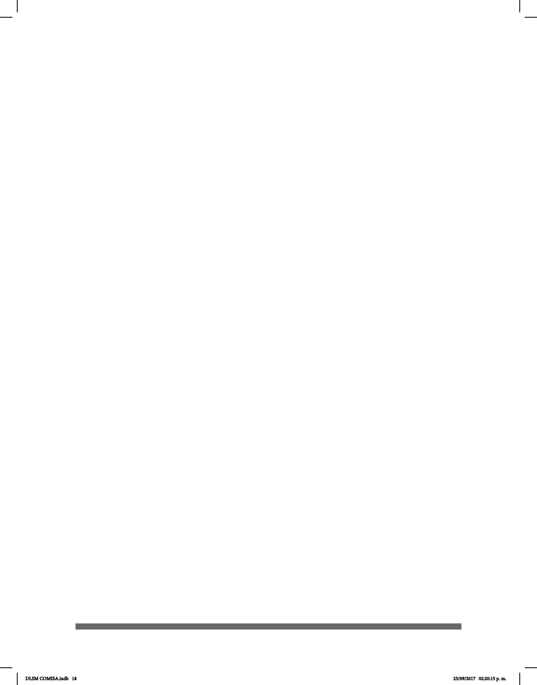

18
Citamos a continuación las fracciones VIII, X, XI, XII y XIII del Capítulo III, Artículo 10 de la
última revisión a la Ley General de Discapacidad del 2008, concernientes a la educación,
donde se especica que se debe:
VIII. Garantizar el acceso de la población sorda a la educación obligatoria y
bilingüe, que comprenda la enseñanza del idioma español y la Lengua de Señas
Mexicana. El uso suplementario de otras lenguas nacionales se promoverá
cuando las circunstancias regionales así lo requieran;
X. Implementar el reconocimiento ocial de la Lengua de Señas Mexicana y el
sistema de escritura Braille, así como programas de capacitación, comunicación, e
investigación, para su utilización en el Sistema Educativo Nacional;
XI. Diseñar e implementar programas de formación y certicación de intérpretes,
estenógrafos del español y demás personal especializado en la difusión y uso
conjunto del español y la Lengua de Señas Mexicana.
XII. Impulsar toda forma de comunicación escrita que facilite al sordo hablante, al
sordo señante o semilingüe el desarrollo y uso de la lengua escrita.
XIII. Impulsar programas de investigación, preservación y desarrollo de la lengua de
señas, de las personas con discapacidad auditiva, y de las formas de comunicación
de las personas con discapacidad visual.
Estas disposiciones legales más que nunca reclaman la pertinencia de denir una
política lingüística y educativa que convoque la participación de la comunidad sorda, así
como de un grupo de especialistas para atender a situaciones urgentes, entre ellas, la
enseñanza de la LSM como segunda lengua a los oyentes; la reexión sobre su propia
lengua por parte de la comunidad sorda; la investigación sobre la gramática de la LSM y la
generación de materiales, entre ellos, los diccionarios bilingües LSM-español.
Si bien ya contamos con algunos diccionarios bilingües español-LSM-español, como
el Diccionario Español-Lengua de Señas Mexicana. DIELSEME (Acosta et al., 2004);
Manos con voz. Diccionario de Lengua de Señas Mexicana (Serafín et al., 2011); y Mis
manos que hablan. Lenguaje de Señas para Sordos (López et al., 2006), hay varios
elementos que deben ser considerados para su elaboración.
Entre otros, se encuentran, por ejemplo, la denición de las características lexicográcas
que amerita una lengua visogestual y la organización de la entrada por la conguración
manual, por el alfabeto manual o por la palabra en español. De ahí que la obra que
encabeza el Lic. Ernesto Escobedo se distinga de las demás. Se consideran las
entradas léxicas del español frente a las unidades léxicas de la LSM; además criterios
lexicográcos para la elaboración y recolección del corpus, así como la redacción del
artículo.
DLSM COMISA.indb 18 25/09/2017 02:20:15 p. m.